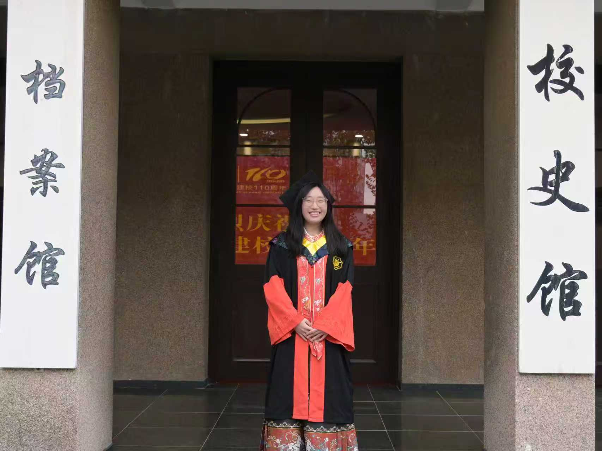
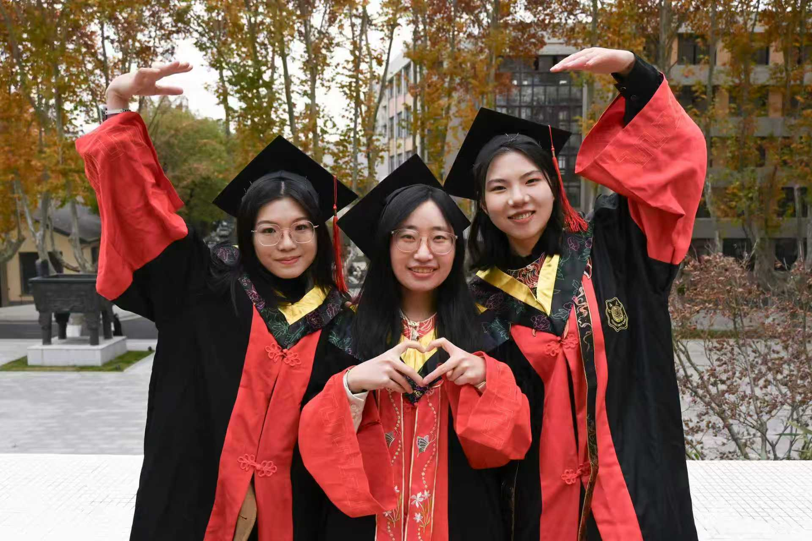
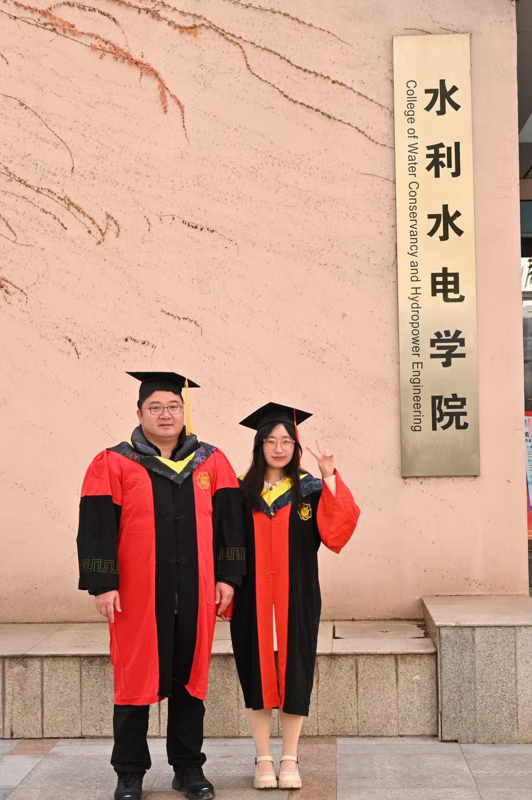
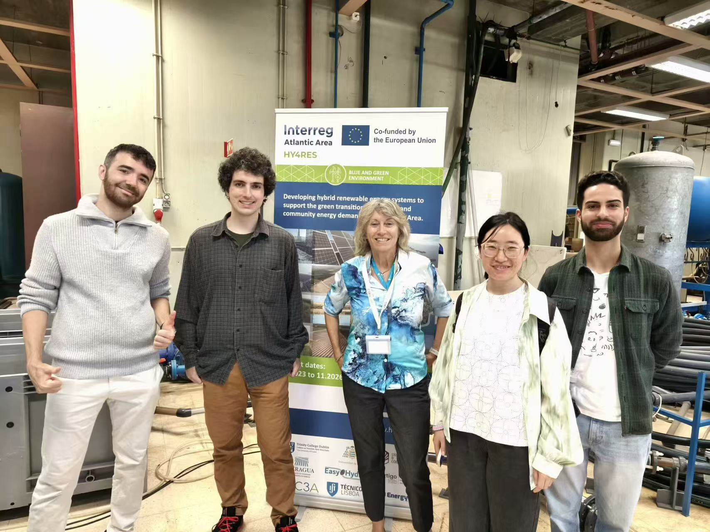
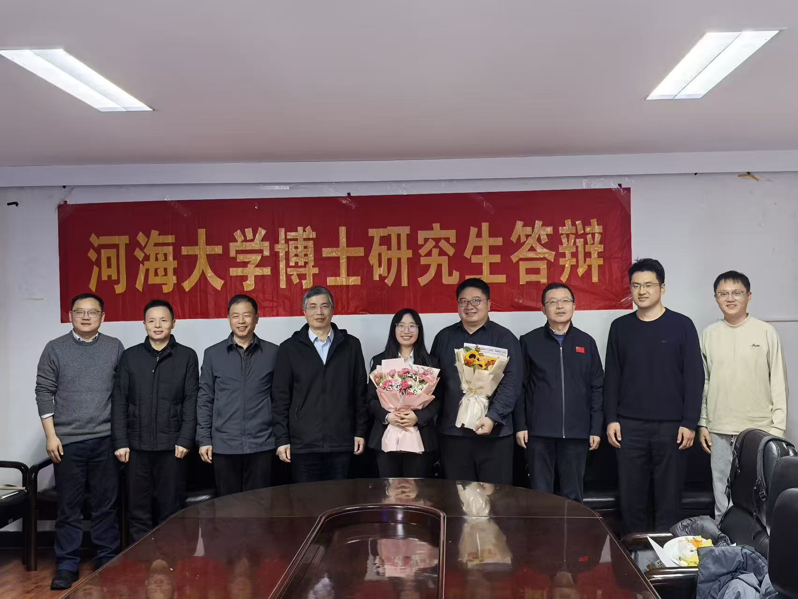

Postdoctoral researcher at the University of Lisbon specializing in hydraulic transient analysis, air–water two-phase flow dynamics, and computational fluid mechanics for water conveyance systems.





Ph.D. Graduation & Research Life — Hohai University · IST Lisboa · Deltares
I am a Postdoctoral Researcher in Civil Engineering at the Instituto Superior Técnico, University of Lisbon, working under the guidance of Prof. Helena M. Ramos. I received my Ph.D. in Water Conservancy and Hydropower Engineering from Hohai University in December 2025, where I was advised by Prof. Ling Zhou.
My research focuses on the air–water coupling mechanism and transient flow dynamics in long-distance water conveyance pipelines. I develop both experimental methodologies and advanced numerical models — including 1D MOC/FVM solvers and 3D CFD simulations — to characterize multiphase flow behavior during rapid filling, pump startup/shutdown, and other operational transients.
I have contributed to multiple major engineering projects in China and Europe, including the HuanBeibu Gulf Water Resources Allocation, the Baihetan Hydropower Station, and the Dalian Bay Undersea Tunnel. My work bridges fundamental research with real-world applications in hydraulic safety and pipeline design.
Research is what I do — curiosity is who I am. From the loess highlands of Shanxi where I was born, to the banks of the Tagus where I now call home, my life has been shaped by an endless desire to explore: new landscapes, new flavours, new ways of seeing the world. The same instinct that drives me to understand fluid dynamics pushes me to keep moving, keep tasting, keep wondering.